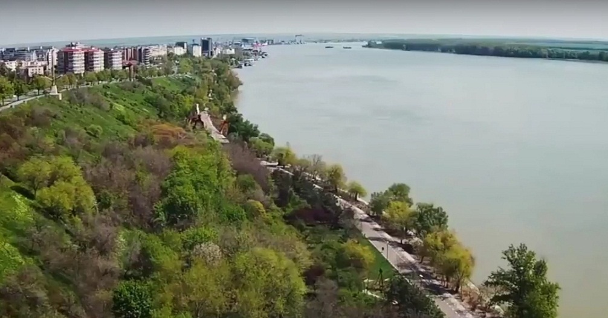
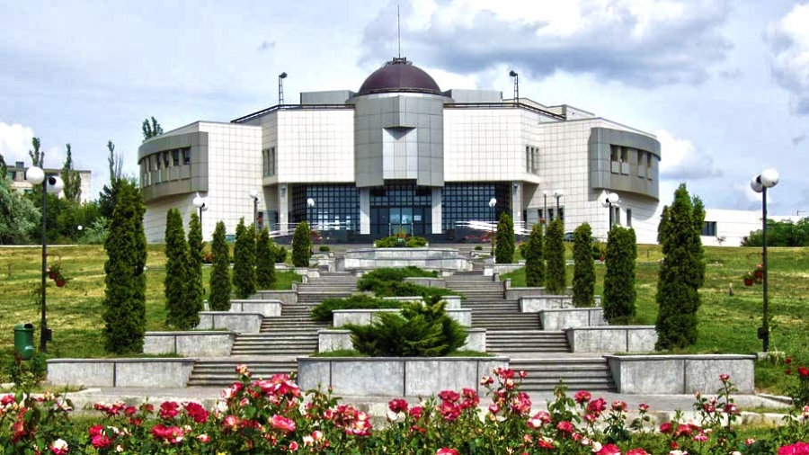
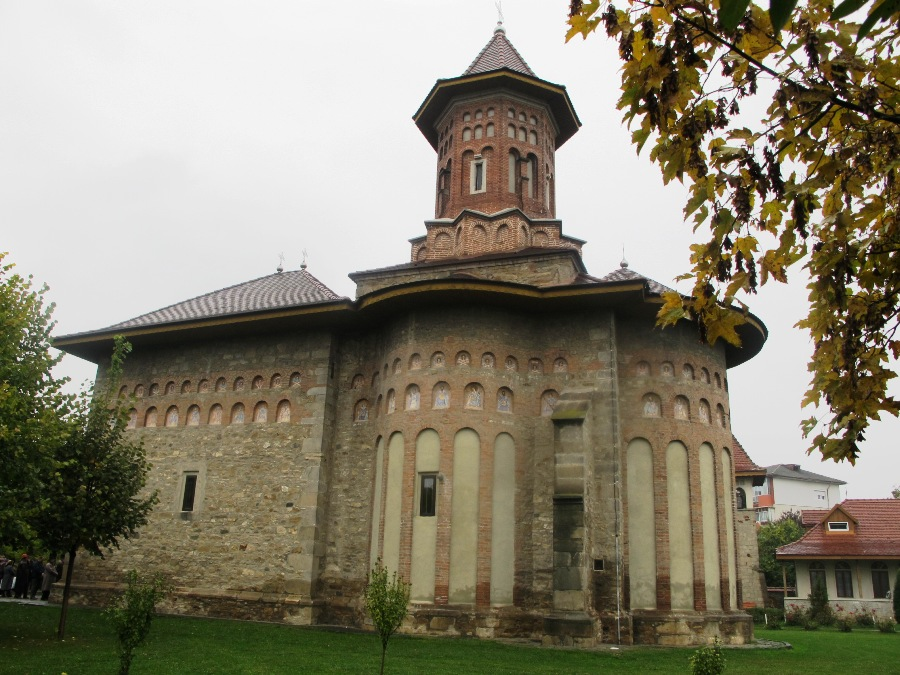

Galati, the city of the Blue Danube, once known as the Town of Lime trees, is revealed to tourists through its architectural jewels, historic monuments, museums, parks and gardens, as well as the natural attractions of the surroundings.

- 1. Danube Shoreline
- The main attraction of the city is the Danube Shoreline, a true backbone of tourism in Galati. With a length of 4 km, arranged in two steps - the upper cliff and the lower cliff, it is considered the longest in Europe, on the Danube. Along the shoreline you will encounter metal sculptures made in the 70's, which contribute to enriching visitors' aesthetic experience. The Danube Shoreline is an integral part of the city, being the outdoor sports ground for lovers of sport, but also an inspiration for amateur or professional photography. The Shoreline is accessible in any season and occasionally here various events are organised: concerts, exhibitions, sporting competitions.
- 2. The Museum of Natural Sciences "Răsvan Angheluţă"
- Passing the threshold of the "Răsvan Angheluță" Museum of Natural Sciences, you will be surprised by the valuable pieces that you will discover in the collections presented here. The Botanical Garden, located around the Museum Complex, offers visitors unique moments of relaxation through their flora and vegetation. The aquarium includes an impressive collection of fish species from the Danube, the Mediterranean, but also freshwater tropical fishes. The planetarium has a state-of-the-art digital projection system. You can also visit two permanent exhibitions dedicated to the Solar System and the Universe. The Astronomical Observatory is the largest and most modern public observer in the country, with a tractable roof and a state-of-the-art optical system, the only one of its kind in Romania. The Zoological Garden is located in the Gârboavele Forest, near Galaţi, and houses a diverse collection of animal species from a multitude of geographical regions of the world.
- 3. Television Tower
- The Television Tower in Galați offers a unique experience that should not be missed when you're passing through the city. The tower is a unique building in Romania and similar to two other towers, one in Canada (Toronto) and the other in Germany (Berlin). With a height of 150 m, the Tower is located at the western end of the Danube Shoreline, in the vicinity of the beach set on its bank. The restaurant at the top of the tower is a point of reference for the city and is a rarity especially in its aerodynamic form, but also through the dome just below the TV relay. The tables are placed circularly so that from any point you can have a wonderful panorama of the city.
- 4. "Precista"Fortified Church
- Near the Danube Shoreline, the oldest building in Galaţi, the "Precista" Fortified Church stands. Restored after World War II, the Church is a true monument of architecture and art, being one of the main tourist attractions in Galati. Nowadays, the old church building retains only the walls, a part of the base of the turret on the nave and the defense tower on the exonartex.
 
<------------------ The Museum of Natural Sciences
Precista Fortified Church ------------------------>